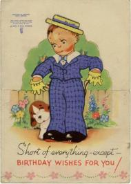
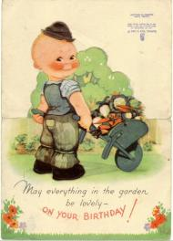

Stars from Mrs. WrightAt school today Mrs. Wright gave me a star for Geography: The Pennine Range is the backbone of England. London is the capital of England. It stands on the banks of the River Thames. The Thames is a very important river. Large ships bring precios [sic] goods from all over the world to the warehouses on the banks of the river. Good *
|
|
I got another star today for my composition:—
Very Good *
Mrs. Wright made me write
Practically Practically Practically When I get 10 stars I can have a Gold star. |
|
We broke up today and I do not have to go back to school until February 7th. At school I wrote a composition:
|
|
I wrote in my Composition book today:— February has twenty eight days. It is a month of all kinds of weather including snow, hail, rain, frost, wind and bright sunshine. |
|
I only got 7 for the Composition I wrote today: I was walking slowly through the wood when suddenly a dog barked. I turned round, but I couldn’t see a dog in sight. So I started to search for the dog. At last I went back home, and as I walked, I saw the dog hideing [sic] in the trees. I am disappointed not to get a star for it. It is probably because I missed the title off, which was The Dog. |
|
At school we had to write Compositions on our favourite season and our favourite lesson: The seasons I like best are spring and summer. I like spring best because the trees are blossoming and then the leaves appear. There are the spring flowers too, such as daffodils, tulips and crocuses. Some of the birds come back from Africa like the swallows. Mrs. Wright has only given me 8 out of 10, and I am disappointed not to get a star. |
A plane has crashed at DigbethThere was a terrible plane crash at Digbeth Midland Red bus depot last night. The German are not coming any more so it was one of ours, and the three crew men were killed. |
|
We went to Granma and Grandad’s for dinner and everybody was talking about the plane crash. There was a picture of the firemen looking at the wreckage in Thursday night’s Evening Despatch and another in yesterday’s Birmingham Gazette. Granma said she had shed a few tears for the men. People in the Bull Ring saw the plane in difficulties and then saw it nose-dive on the bus depot. It hit a Midland Red bus which was outside and then reared up onto a workshop and burst into flames. One of the crew was pulled out by a police sergeant from Digbeth Police Station across the road but the man was already dead. Last night’s Birmingham Mail said that one of the men who was killed was Sergeant Observer Wireless Operator David Huddleston. Before he joined the R.A.F. he used to work at the Alliance Assurance Co. Ltd. in town, only half-a-mile from where the crash was. His father Mr. R.R. Huddlestone lives at 220 Chelmsley Lane, Marston Green. Four Birmingham City bus conductresses were sitting in the Midland Red bus station just before the crash but went to have a cup of tea in the canteen, so they were not hurt, but I feel very sad about the airmen. |
|
At school we had to write a Composition on a day at the seaside, so I wrote about our holiday in Rhyl in 1939: When I went to the seaside last time it was a sunny day. I saw the waves rush up onto the sand and then back to the sea. There were children too making sand- castles and enjoying donkey-rides. Once or twice I saw an ice-cream-man selling ice-cream. I saw two children sailing toy boats on the sea, but I collected sea- shells. One day the most exiting [sic] day in my holiday I went to see a Punch and Judy show. Mrs. Wright gave me 9 out of 10 and Good for it, but not a star. |
|
At school Mrs. Wright made me write:— Corrections:—Then she read a poem to us about Abou Ben Adhem [from the Rubaiyat of Omar Khayyam by James Henry Leigh Hunt] and made us copy the first verse from the blackboard:— Abou Ben Adhem |
|
At school we learned Pippa’s Song:— The year’s at the Spring |
|
It is Good Friday today. |
A baby brotherMammy was bathing me in the sink and said would I like a little brother. I said yes. |
|
We went back to school today after the Easter holiday. Mrs. Wright made us copy from the blackboard:— A term well begun, is a job well done And made us practice writing W:— wa we wi wu wo wa we wi wu wo water while wisdom |
The Union JackToday is St. George’s Day. St. George’s Cross is a red upright cross on a white background. St. Andrew’s Cross is a white diagonal cross on a blue background. St. Patrick’s Cross is a red diagonal cross on a white background. The three together make the Union Jack. Scotland was joined to England in 1603 and Ireland was joined to England in 1801, so the flag was different before then. People fly the flag at half-mast when someone important dies. It is important to fly the flag the right way up which is with the broad white band at the top of the flagpole. I learned this at cubs. It is also important not to stick stamps on upside down as this is an insult to the King. |
|
It is Whit Monday today. |
D-DayThis morning Mammy was kneeling on the floor, polishing the lino and listening to the wireless. There was an announcement about the invasion and Mammy stopped to pray. |
Lights in the skyIn the playground I was looking up into the blue sky and saw a tiny streak of light, then another and another, like tiny fairy beings. I told Margaret and she looked up into the sky, and I think she saw them too. Soon all the boys and girls were gazing into the air and everyone was very excited. Afterwards Mr. Olarenshaw went round all the classes to talk about it. |
|
<#440706#> |
TerminationMammy said she is going into hospital, and we are very frightened. Mrs. Mayeur is going to look after us.
|
|
Mammy had the operation today [at the Women’s Hospital, Showell Green Lane]. Daddy didn’t go to work. I went to school and when I came home for dinner she was not here. Freda took Clarice and Julia up town and when they came back Mammy had gone.
|
God will heal MammyMammy is still in the Women’s Hospital [at Showell Green Lane]. This morning I was in the bedroom and heard Daddy talking in the garden to Mr. Davis [Harold Davis of 5 Circular Road} and he said it is serious and she is very ill. She has got disseminated sclerosis. It made me very frightened and I was crying. My hot breath made the window steam up and I wrote with my finger on the window pane GOD WILL HEAL MAMMY.
|
|
Daddy has been to see Mammy in hospital. He can only go in visiting hours for a few minutes. |
|
Mammy is still in hospital. Daddy and Freda went to work. I went to school. Mrs. Mayeur looked after us but the dinner was horrid. |
|
Mammy is still in hospital. We do not like potatoes with no salt in them. |
|
Mammy is still in hospital. We do not like Mrs. Mayeur putting Beryl in the pram. |
|
Mammy is still in hospital. I went to school. |
|
Mammy is still in hospital. I went to school. |
|
Mammy is still in hospital. |
|
Daddy went on the 31A to see Mammy in hospital. She is getting better. |
|
Mammy is coming home from hospital tomorrow. |
|
Mammy came home from the hospital today. She has been very ill. She is going to look after us now. Thank you, O God. |
I am 9Some cards for my birthday today: |
From Dorothy, Tom and JenniferFrom Aunt Doll, Uncle Bill andFrom Bill, Ruth, Billy and Ken |
History bookFreda took us into town yesterday afternoon to buy me a book for my birthday. We went to the Midland Educational and I looked at the History books. Freda bought me History Through Familiar Things, Part II Shelter and Society by J.R. Reeve, B.A., B.Sc. (Econ,) Head Master, Mile End Central School, London, and I have been looking at it today. It is a wonderful book with 65 illustrations and four coloured plates. One of these is of the “Flying Scotsman” passing the “Royal Scot” with Edinburgh Castle in the background, and there is also a picture showing three early steam locomotives, including Stephenson’s “Rocket”. There are also photographs of the Pyramids of Giza built 5,000 years ago, the Acropolis of Athens, St. Paul’s Cathedral and the Crystal Palace in London. [jpg] |
77 Air RaidsDaddy brought the Birmingham Gazette home from work as usual. On the front page it says that 2,227 people got killed in 77 Air Raids in Birmingham. 3,021 people were seriously injured and 3,689 were slightly hurt. The worst raid was on the night we got bombed out, Tuesday-Wednesday 19th-20th November 1940. 615 people were killed, 542 seriously injured and about the same number slightly hurt. The next worst raid was on Wednesday-Thursday 9th-10th April 1941. 350 were killed and 428 seriously injured, and about the same number not so badly hurt. 10,000 houses were totally destroyed in the War and well over 100,000 were badly damaged, including ours. A lot of the damage was done by land mines, which is what we had at Belchers Lane. In the late news it says that a flying bomb crossed the east coast last night near a farm and damaged some buildings. I am frightened in case they come here. |
The Radio DoctorThe wireless starts at 7 a.m. on the British Home Service with the News, and then at 7.15 we are supposed to do Physical Exercises. Gramophone records come on at 7.30 and Prayers at 7.55. The News comes on again at 8 a.m. and then the Radio Doctor [Dr. Charles Hill] at 8.15. We like to listen to him because he is sounds quite funny. |
Film FunI have had two big books for Christmas. One is The Treasure Book of Fairy Tales and it contains Cinderella, Rumpelstiltskin, The Little Brother and Sister, The Great White Bear and the Trolls (A Story from the Norse), The Story of the Three Billy Goats Gruff, Hansel and Grethel, The Enchanted Wood, Dick Whittington, Rabbit’s Eyes (A Korean Fairy Tale), Hans in Luck, Drakestail Goes to See The King, The Storks, The Golden Bird, and Tom Thumb. It is a lovely book with a full colour picture of Cinderella and her sisters at the front, and lots of black and red pictures, and other black-and-white ones which I can colour. The other book is Film Fun Annual 1945. Film Fun is my favourite comic. It comes out every Tuesday and has Laurel and Hardy, Joe E. Brown, Old Mother Riley (Lucan and M’Shane), Bud Abbott & Lou Costello, Max Miller and Sydney Howard. There are 96 pages in the Annual, including 8 pages in red and blue, also 2 glossy pages of photographs of Abbott & Costello, Old Mother Riley, George Formby, Laurel & Hardy; and Cowboy Kings of the Screen —Gene Autry, Tim Holt, Roy Rogers, Bill Elliott and Johnny Mack Brown.
|